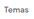
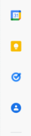
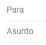

Menú Principal
| Menú principal | Redactar | Recibidos | Destacados | Pospuestos |
|---|---|---|---|---|
| Pestaña que abre y cierra el menú principal. | Permite redactar mensajes. | Pestaña para mensajes que no han sido clasificados. | Pestaña para mensajes marcados como importantes. | Pestaña para mensajes pospuestos, es decir, de los cuales se notificará más tarde. |
| Enviados | Borradores | Más | Google Meet y Hangouts |
|---|---|---|---|
| Pestaña para mensajes que tú hayas enviado. | Pestaña para mensajes creados y que no has enviado. | Te desplegará secciones adicionales que te servirán según tus necesidades y estas son: Importantes; Chats; Programados; Todos; Spam; Papelera; Además de la opción de Categorías como son: Social; Notificaciones; Foros; Promociones. También encontraras las opciones para gestionar y crear nuevas etiquetas. | Opciones adicionales |
Inicio
Interfaz Central
| Barra de búsqueda | Filtros | Opciones de selección y deselección | Refrescar | Opciones de mensaje | Accesos directos |
|---|---|---|---|---|---|
| Permite buscar entre los correos recibidos. | Permite hacer búsquedas más específicas. | Muestra opciones de selección y deselección de mensajes. | Permtie refrescar la bandeja de entrada. | Se muestran las opciones de: marcar como no leído/no importante, destacar, filtrar mensajes similares, silenciar y reenviar como archivo adjunto. | Se muestran accesos directos a las categorías Social, Promociones y a la página Principal. |
Inicio
Configuración de Gmail
| General | Etiquetas | Recibidos | Cuentas e importación | Filtros y direcciones bloqueadas | Reenvío y correo POP/IMAP |
|---|---|---|---|---|---|
| Permite configurar las opciones más sencillas de Gmail como el idioma, la cantidad de mensajes por página, el estilo de texto predeterminado, las sugerencias de gramática y ortografía, etc. | Permite configurar que etiquetas mostrar u ocultar, además de que también permite crear nuevas. | Desde aquí se configuran las opciones de la pestaña más relevante, la de Recibidos. | Aquí se configuran opciones más privadas como el cambio de contraseña o la importación de contactos. | Como se indica, aquí se configuran filtros y bloqueos para direcciones específicas. | Permite añadir direcciones de reenvío, además de la habilitación en inhabilitación del correo POP e IMAP. |
 |
| Complementos | Chat y Meet | Avanzadas | Sin conexión | Temas |
|---|---|---|---|---|
| Permite gestionar los complementos/complementos de desarrollador instalados. | Ajustes para la interfaz de Chat y Meet. | Ajustes extra para la interfaz de Gmail. | Habilitación del correo sin conexión. | Opción para fijar un fondo en la bandeja de Gmail. |
|  |
Inicio
Opciones Adicionales
| Asistencia | Configuración | Aplicaciones de Google | Cuenta de Google | Activar/Desactivar/Seleccionar herramienta de introducción texto |
|---|---|---|---|---|
| Permite acceder al servicio de asistencia de google. | Permite acceder a las configuraciones de Gmail. | Desplaza una pestaña con las apps de Google. | Permite acceder a la configuraciones de la cuenta de Google. | Permite la configuración de las herramientas de introducción de texto. |
Inicio
Panel Lateral
| Complementos de Gmail | Descargar complementos | Ocultar/Mostar panel lateral |
|---|---|---|
| Aquí se muestran los complementos de Gmail instalados. | Permite agregar más complementos. | Permite mostrar u ocultar el panel lateral de Gmail. |
|  |
Inicio
Opciones de Mensaje
| Archivar | Marcar como spam | Eliminar | Marcar como no leído | Posponer |
|---|---|---|---|---|
| Permite archivar el/los mensajes seleccionados. | Marca como spam el/los mensajes seleccionados. | Envía a la papelera el/los mensajes seleccionados. | Marca como no leído el/los mensajes seleccionados. | Sirve para posponer el/los mensajes seleccionados. |
| Añadir a tareas | Mover a | Etiquetas | Más |
|---|---|---|---|
| Añade a tareas el/los mensajes seleccionados. | Permite mover el/los mensajes seleccionados a otra etiqueta. | Permite seleccionar las etiquetas para el/los mensajes seleccionados. | Muestra las opciones adicionales como son: Marcar como no leído, como no importante, Destacar, Filtrar mensajes similares, Silenciar y Reenviar como archivo adjunto. |
Inicio
Redacción de Mensajes
| Opciones de formato | Adjuntar archivos | Insertar enlace | Insertar emoji | Insertar archivos con Drive |
|---|---|---|---|---|
| Insertar imagen | Cambiar a modo confiencial | Insertar firma | Opciones adicionales | Descartar mensaje |
|---|---|---|---|---|
| Destinatario y Asunto | Cc (Con copia) | CCO (Con copia oculta) | Minimizar/Maximizar/Cerrar | Enviar |
|---|---|---|---|---|
|  |
Inicio